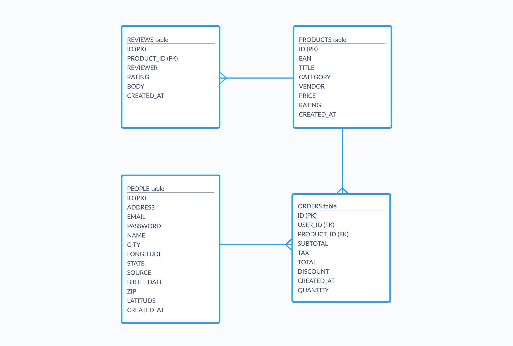

Abstraction is one of the fundamental core components of Computer Science, together with Decomposition, Pattern Recognition, and Algorithms. The essence of Abstraction involves hiding all the features that we don’t need in order to focus on those that are more important. From this, we create a representation of what we are trying to solve and develop algorithms.
Abstraction can be applied to any aspect of our life. For example, an e-commerce store records information about its inventories and customers, then organizes it in tables. From these tables, they develop a system called ERD (Entity Relationship Diagram) (fig1). By looking at this diagram, we can understand how the business is operating without diving deep into detail. This is an example of abstraction.
fig1 ⎯ Entity Relationship Diagram. By looking at this, we can understand, for example, which customer makes which order of which product and their review.
Abstraction is also useful in data visualization. A social network can be visualized with dots and lines. Each dot represents one person. The line that connects two dots represents the relationship between these two people. In real life, a person can be described using many different characteristics (age, hair color, nationality, sense of humor, etc). However, to achieve this visualization, we use abstraction and hide all the irrelevant information. The audience of this visualization does not need to know the hair color of a person in the graph for example.
Try it yourself
On the right side is a visualization of a company. Each dot represents an employee and each line represents the connection between two employees. As the company grows, employees grow more and more distant from each other in terms of connection. The visualization is the abstraction of this observation.
Tweak the number of employees to view 👉